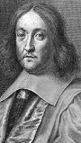

Pierre de Fermat (1601-1665) modern matematiğin geliştirilmesine önemli katkıda bulunan Fransız bir avukat, politikacı ve matematikçiydi. Kendisi günümüzde daha ziyade “Son Teorem”i ile anımsanmaktadır. Bu, 1994 yılında çözülene kadar en gelişmiş beyinleri yüzlerce yıl meşgul etmiş basit görünümlü bir matematik problemidir.

Fermat, Fransa’nın güneyindeki küçük bir kasaba olan Beaumont-de-Lomagne’da doğdu. Bordeaux ve Orleans üniversitelerine gitti. Matematik ve hukuk eğitimi aldı. 1631 yılında hukuk diploması aldıktan sonra hayatının kalan kısmını yerel hükümet için çalışarak geçirdi. Hayatının bu safhasında matematikle sadece hobi olarak ilgileniyordu.
Zengin ve bilge bir insan olan Fermat, Blaise Pascal (1623-1662) gibi Fransız düşünürleri ile ilişkiye geçti. Pascal’la birlikte ilk olasılık kuramlarının geliştirilmesi için iş birliği yapmıştı. Kimi matematik projelerini ise yaşadığı dönemin karmaşık yapısı nedeniyle hayata geçiremedi. İç savaş koşullarına dayanmaya çalıştı. Bu sırada vebaya yakalandı ve 1653 yılında hastalıktan sağ olarak kurtulan az sayıdaki insandan biri oldu.
Fermat’ın Son Teorem’i 1637 yılında kaleme aldığı ama ölümüne kadar açığa çıkmayan gizemli bir notta yazılıdır. Problem, Yunan matematikçi Diophantus’un (200-284) kitabının bir köşesine son derece kışkırtıcı olan şu sözlerle birlikte yerleştirilmişti: “Bu önermeye ilişkin harika bir ispatım var. Ne var ki bu köşe onu yazmak için çok dar.”
Fermat’ın çözdüğünü iddia ettiği sorun sonraki 350 yıl boyunca matematikçileri uğraştıracaktır. Fermat’ın “Son Teorem”ine göre xn+yn=zn eşitliğinde; x, y ve z “0” dışındaki tam sayılar ve n ise 2’den büyük bir tam sayıysa bu eşitlik gerçekleşemez. Teorem doğru gözükmektedir. Buna karşılık matematikçiler bir türlü bu eşitliğin ispatını yapamamaktaydılar.
1994 yılında Princeton Üniversitesi’nde bir profesör olan Andrew Wiles (1953-) sorunu çözdü. Tam sekiz yıl boyunca çatı katındaki odasında problemi çözmek için uğraşmıştır. Çabalarının sonucunda Fermat’ın gerçekten de haklı olduğunu ortaya koyar.
Ek Bilgiler
1- Fermat’ın kendi teoremini gerçekten ispatlayıp ispatmadığı bilimsel tartışmalara konu olmuştur. Pek çok matematikçi kitabın köşesindeki notu ciddiye almamakta, elindeki araçlarla Fermat’ın kuramını ispat etmiş olmasının mümkün olmadığını ileri sürmektedir.
2- Fermat’ın son teoremi popüler kültüre, özellikle de bilimkurguya konu edilmiştir. Örneğin; The Simsons adlı çizgi dizide teorem pek çok vesileyle espri konusu yapılmıştır. Programın Halloween bölümlerinden birinde teoremi çürüttüğü ileri sürülen bir eşitlik ortaya atılmıştır.
3- Asıl adı Pierre Fermat’tır. Ancak hükümet görevlisi olduktan sonra kulağa daha aristokratik gelen Pierre de Fermat adını almıştır.